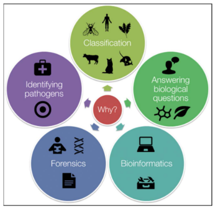
1 Molecular Systemics
Molecular Phylogenetics is all about understanding how different living things are related to each other and how they’ve evolved over time. It helps scientists figure out family trees for all kinds of organisms, giving us the best picture of their evolutionary history. This information helps answer important questions in biology, like how fast species change over time, how they interact with each other, and where they originally came from. Plus, it’s super useful for things like identifying species, sorting them into groups, tracking down pathogens that cause diseases, solving crimes, and using computers to analyze biological data.
1.1 Molecular Phylogenetics
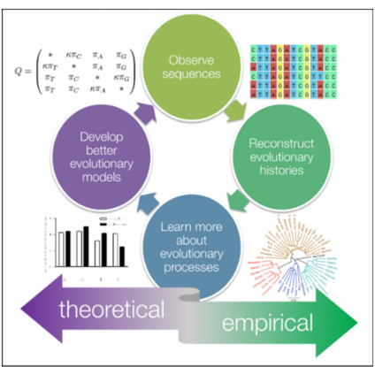
Molecular Phylogenetics delves into the intricate tapestry of evolutionary history and ancestral connections among organisms, leveraging molecular data for insights.
Within this field, phylogenetics focuses on identifying homology, which refers to similarities resulting from inheritance from a shared common ancestor, serving as evidence of shared ancestry among organisms. Researchers construct phylogenetic trees through meticulous analysis of molecular sequences, enabling them to infer relationships among various entities, be it species, individuals within a population, or even genes. These trees visually represent the evolutionary relationships, offering a snapshot of the complex web of life’s interconnectedness and evolutionary trajectories.
1.1.1 Homology and Homoplasy
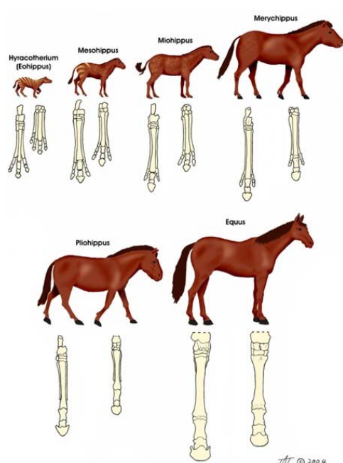
Homology refers to similarities among organisms that stem from shared ancestry, providing evidence of common lineage. This similarity is fundamental in reconstructing evolutionary history, with fossil data playing a key role.
However, fossilization is an exceedingly rare process, leading to a scarcity of known fossils for many taxa. Additionally, even when fossils are available, they may not definitively align with specific lineages within taxa, introducing ambiguity into the evolutionary narrative. This complexity underscores the challenges researchers face in unraveling the intricate tapestry of life’s evolutionary pathways.
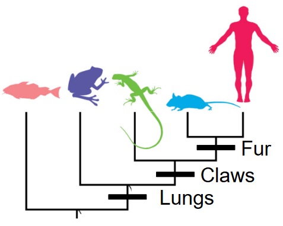
In reconstructing evolutionary histories using present-day data, scientists employ a method that involves grouping organisms based on shared traits. However, it’s essential to only compare traits that originate from a common ancestor, known as homologous traits. This ensures that the comparisons accurately reflect the evolutionary relationships between different organisms. By focusing on these homologous traits, researchers can effectively piece together the complex puzzle of how species are related and have evolved over time.
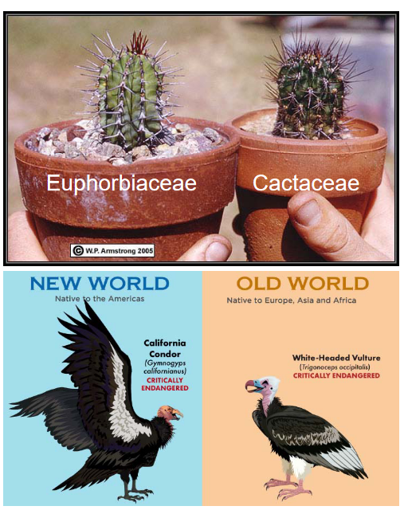
When a trait evolves independently in multiple groups, it’s termed homoplasy. Thus, distinguishing between homologous traits and those resulting from convergent evolution is critical in accurately understanding evolutionary relationships.
1.1.2 Molecular Data
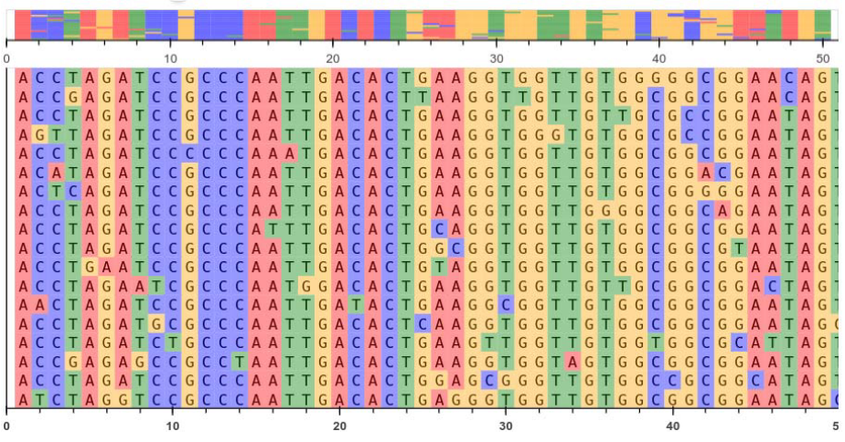
A homologous character refers to a column in the data alignment, whether it’s DNA, RNA, or amino acids. This column represents a specific position in the sequence alignment where the molecules share a common ancestry.
1.1.2.1 Why Use Molecular Data?
DNA and amino acid sequences serve as inherited units, carrying genetic information across generations. DNA data, in particular, is remarkably specific and information-rich.
Thanks to modern techniques, sequencing DNA has become quick, reliable, and inexpensive. This allows for the unambiguous description of characters and quantitative traits encoded within the genetic material.
Furthermore, there’s a growing body of knowledge surrounding the molecular evolution of DNA, enriching our understanding of how genetic information changes over time.
1.2 Phylogenetic Trees
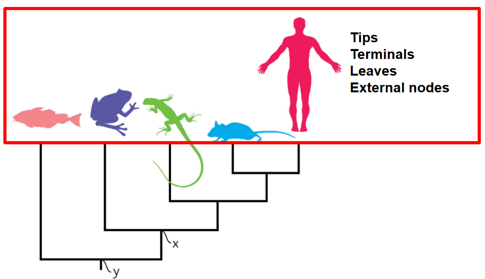
We often use a visual representation called a phylogenetic tree to show evolutionary relationships. The tree consists of nodes connected by branches. A branch represents an evolutionary lineage, while a node represents a hypothetical common ancestor. Nodes occur where a lineage splits into two, such as during a speciation event when one species diverges into two separate species.
The root of the tree is an internal node representing the most recent common ancestor of all the species being studied. Think of it as the starting point of the tree. An outgroup is a taxon chosen as an external point of reference, usually a species or group of species that diverged from the rest of the group being studied earlier in evolutionary history. A clade is a group of organisms that have all descended from a common ancestor.
Understanding the root is essential because it helps us infer the order of nodes through time. Without knowing the root, it’s challenging to determine the sequence of evolutionary events accurately.
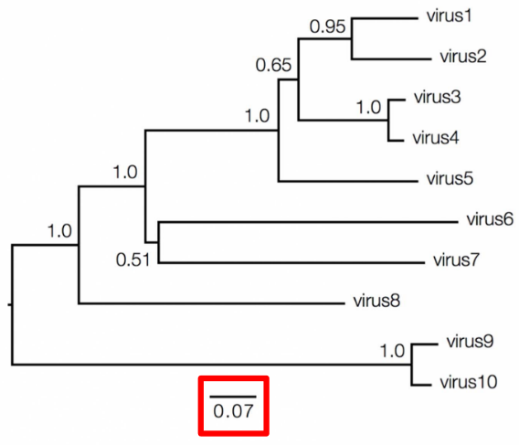
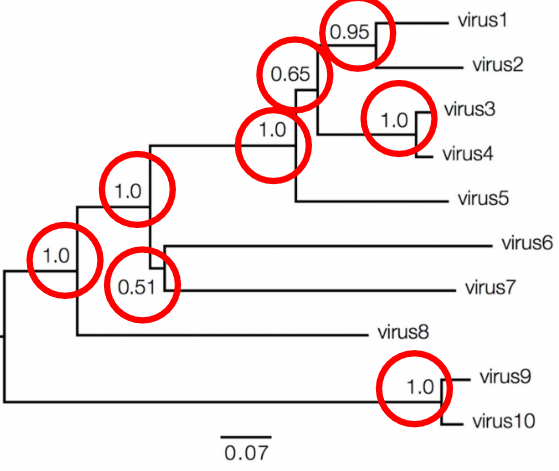
In molecular phylogenetics, the values associated with branches and nodes provide important information about the evolutionary relationships depicted in a phylogenetic tree. Branch lengths can vary in their informativeness. In a cladogram, where branch lengths are uninformative, the tree represents only the branching pattern of relationships, without indicating the amount of genetic change that occurred along each branch. However, in a phylogram, branch lengths provide informative data about the amount of genetic change between nodes.
To interpret branch lengths, researchers often use a scale bar. This bar represents the amount of genetic change, typically measured as substitutions per site. The length of the scale bar corresponds to the number of changes divided by the length of the sequence. Alternatively, it can represent a percentage change. This information helps scientists understand the genetic divergence between different species or groups depicted in the phylogenetic tree.
Bootstrap support is one measure of nodal support, typically ranging from 0 to 100. A bootstrap support value between 70-80 suggests weak support for the node, 80-90 indicates moderate support, and 90-100 signifies strong support.
Another measure is Bayesian posterior probabilities, which also range from 0 to 1. A posterior probability of 0.9-0.95 indicates weak support, while a value of 0.95-1 suggests strong support for the node.
1.2.1 Groupings
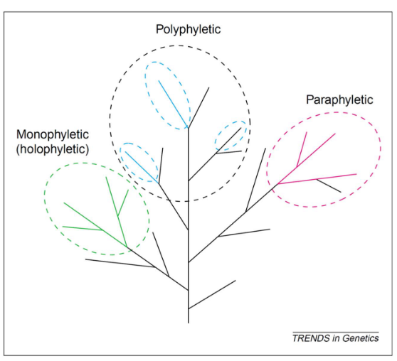
The term “monophyletic” is synonymous with “clade” and refers to a group of organisms that includes all the descendants of a common ancestor.
A group that excludes some of its descendants is termed “paraphyletic.” An example of this is reptiles excluding birds.
If a group is polyphyletic, this means that it also includes distantly-related phyla.
1.2.2 Traits
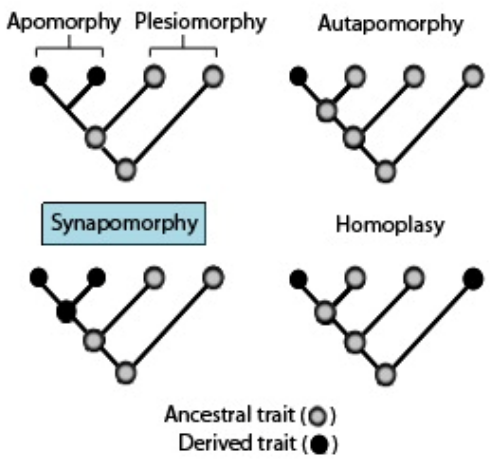
Here are some key terms related to traits:
- Apomorphy: A derived trait, meaning a characteristic that has evolved in a particular lineage and is different from the ancestral form.
- Synapomorphy: A derived trait shared by members of a clade, indicating common ancestry. For example, seeds in seed plants are a synapomorphy.
- Autapomorphy: A derived trait unique to a single taxon, distinguishing it from other related taxa.
- Plesiomorphy: An ancestral trait, meaning a characteristic that was present in the common ancestor of a group of organisms. For instance, exothermy in “reptiles” is a plesiomorphy.
- Symplesiomorphy: A shared ancestral trait, present in both the ancestor and several descendants, but not unique to any particular group.
- Homoplasy: A trait that evolved independently in multiple groups, leading to similarities between taxa that are not due to common ancestry. For example, fleshy fruits evolving independently in different plant lineages are considered homoplastic traits.